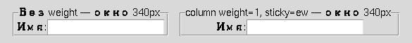

Глава 16 · Создаём классные приложения с Tkinter
Адаптивный grid: sticky и weight
Форма не обязана оставаться одного размера навсегда — grid умеет подстраиваться.
Адаптивный grid: кто получает лишнее место
По умолчанию строки и столбцы grid() не растут при увеличении
окна. Чтобы форма подстраивалась под размер окна, столбцам/строкам нужно явно назначить
вес:
adaptivny_grid.py
root.columnconfigure(1, weight=1) # растягивается именно колонка 1 (с полями ввода)
root.rowconfigure(0, weight=1)
ttk.Label(root, text="Имя:").grid(row=0, column=0, sticky="w")
ttk.Entry(root).grid(row=0, column=1, sticky="ew") # растягивается по ширине ячейки
raspredelenie_vesa.py
def raspredelit_prostranstvo(weights, extra_space):
total = sum(weights)
if total == 0:
return [0] * len(weights)
return [extra_space * w / total for w in weights]
print(raspredelit_prostranstvo([1, 2], 300)) # [100.0, 200.0]weight — это пропорция, не пиксели
Вес определяет долю дополнительного пространства, а не абсолютный размер. Колонка с весом 2 получит вдвое больше лишнего места, чем колонка с весом 1 — но обе продолжат вмещать свой обычный минимальный контент.
sticky — к какому краю ячейки прилипает виджет
| sticky | Эффект |
|---|---|
| "w" / "e" / "n" / "s" | прилипает к одному краю ячейки (запад/восток/север/юг) |
| "ew" | растягивается по ширине ячейки |
| "nsew" | растягивается по всей ячейке — и по ширине, и по высоте |
Правило одного родителя
✓ Верно
root (pack)
frame (grid внутри)
label
entry
✗ Ошибка
root
widget_a (.pack())
widget_b (.grid())
Смешивать pack() и grid() нельзя
у виджетов с одним и тем же родителем — но разные контейнеры (root
использует pack(), а вложенный Frame
внутри — grid()) полностью независимы друг от друга.
place() — точное позиционирование
place.py
label.place(x=20, y=10)
label2.place(relx=0.5, rely=0.5, anchor="center") # центр контейнераplace() — не первый выбор для обычных форм
place() удобен для точных наложений и особых случаев, но не подстраивается под размер окна автоматически, как grid() с весами. Для обычных адаптивных форм — grid().Как выбрать менеджер геометрии
pack vs grid vs place
Простое вертикальное расположение / регионы
→
pack()
Форма/таблица/адаптивные колонки
→
grid()
Точное или особое позиционирование, наложения
→
place() — осознанно
Сложный экран
→
Frame + разные менеджеры в разных родителях
Практика: распределение веса в адаптивном grid
Проверяется без tkinter — чистая арифметика распределения пространства